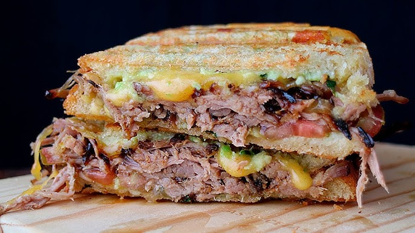

Cerdo Desmenusado

Receta de Cerdo Desmenusado con dos Ingredientes
Una receta fácil de cerdo desmenuzado. Usa una olla de cocción lenta para preparar estos deliciosos sándwiches usando solo un lomo de cerdo y tu salsa de barbacoa favorita.
Ingredientes
- 1 lomo de cerdo deshuesado (2 1/2 libras)
- agua según sea necesario
- 1 botella (18 onzas) de salsa de barbacoa.
- 8 panecillos grandes para sándwich, partidos en dos
Instrucciones
- Coloque la carne de cerdo en una olla de cocción lenta y agregue suficiente agua para cubrir el fondo de la olla.
- Cocine a fuego lento durante 7 horas. Transfiera la carne de cerdo a un bol y desmenúcela con dos tenedores. Vuelva a colocar la carne de cerdo en la olla de cocción lenta y agregue la salsa barbacoa. Continúe cocinando a fuego lento durante 45 minutos a 1 hora.
- Coloque una cantidad generosa de carne de cerdo en cada panecillo para servir.